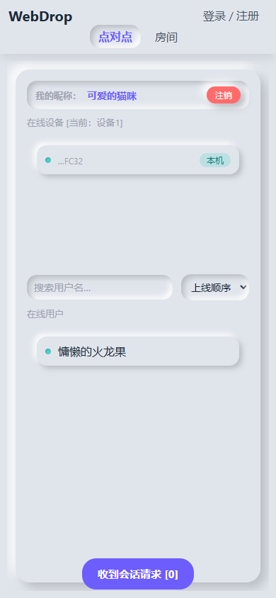
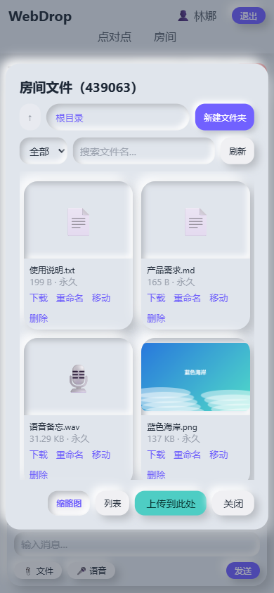

无需安装客户端、打开浏览器即可使用的文件传输与聊天工具。WebRTC P2P 直连 + 服务器中转兜底，单容器 Docker 私有化部署。
WebRTC DataChannel，IPv6 优先，同局域网自动识别；失败自动回退服务器中转（不落盘）。
文字、语音、照片、视频、文件；文件夹管理、过期销毁、上传/下载权限控制。
实时监控、文件管理、用户审批、房间设置、全局主题与设备管理。
桌面端与手机端响应式设计，移动端文件选择器、语音录制均有专门优化。
内置 6 套公共主题，支持 zip 主题包自制、预览、上传与全局默认。
Docker 一条命令启动，config 与 data 挂载宿主机，数据持久、升级迁移简单。


内置默认新拟物派与 6 套公共主题（暗黑模式、孟菲斯风格、拟物风格、漫画风格、蒸汽朋克、吉卜力风格），支持自制主题包并一键切换。左右切换或自动轮播查看：
完整功能（WebSocket / WebRTC / SQLite）需要一台自己的服务器或 NAS，推荐用 Docker 部署：
git clone https://github.com/kuka1774083-wq/WebDrop.git
cd WebDrop
docker compose up -d --build
# 访问 http://服务器IP:60003 ，默认管理员 admin / admin（首次登录强制改密）也可以直接使用 GitHub 自动构建的镜像（每次推送 main 自动发布到 GitHub Container Registry）：
docker pull ghcr.io/kuka1774083-wq/webdrop:latest
docker run -d --name webdrop --restart always \
-p 60003:8080 \
-v "$(pwd)/config:/app/config" \
-v "$(pwd)/data:/app/data" \
ghcr.io/kuka1774083-wq/webdrop:latest